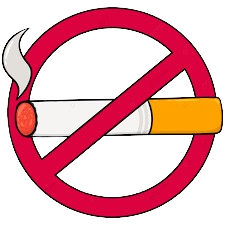

Acciones que promoveremos a realizar para minimizar el problema

.png)
✅Evitar hacer uso de vehículos a motor de combustible fósil.
✅Evitar fumar.
✅Comprar productos (aerosoles, extintores, sprays) que sean amigables con la capa de ozono.
✅Evitar sustancias en gas como el desodorante en spray, el veneno Raid, etc.
✅Evitar la acumulación de basura, ya que contamina el aire con olores nauseabundos.
✅Plantar más árboles, ya que son filtros naturales de oxígeno.
✅No filtrar desechos al agua, porque estos sueltan un mal olor que luego se extiende por kilómetros,
mejor instalar servicios de tratamiento de aguas.
✅No talar árboles, más bien, reforestar lo más posible.
✅No provocar incedios.
✅No quemar la basura.
.png)
.png)
.png)
.png)
.png)
Principios de World Air Purifying
La promoción y defensa al medio ambiente.
Concientizar sobre a la población de la negatividad de la
contaminación
y de los beneficios de nuestro proyecto ayudará a
reducir la contaminación cosa que facilitará el trabajo el cual debe
purificar el aire, pero sin perjudicar algún otro medio de la naturaleza.
Comunicación transparente y verás.
Comunicar y notificar sobre todos los proyectos, gastos, acciones y
decisiones
que se tomen que relacionen a la ONG sin ocultar ninguno y
darle un verdadero y debido cumplimiento a todo lo que
se notifique.
Acceso libre y directo a las víctimas.
Todos los seres vivos son víctimas de esta problemática y se busca que
sin
importar la ubicación, capacidades económicas o estado financiero
pueda disfrutar de los beneficios de la ONG
siempre tomándole mas
prioridad a aquellos que son mas vulnerables y se ven mas afectados
ante esta
problemática.
Misión clara y pública.
Enfocar todas las acciones de la ONG en un objetivo claro y preciso, y que
solucione la
problemática de la contaminación y que este objetivo se
pueda conocer para todas las personas del planeta sin
necesidad de
ocultar este mismo.
Neutralidad y Discriminación cero.
Sin importar la nacionalidad, rasgos físicos, etnia, cultura, creencia,
etcétera no se le puede privar el derecho a ningún ser humano de
recibir la ayuda y el servicio de la ONG.
Nuestros valores
Solidaridad: Trabajar en colaboración y apoyo mutuo para abordar desafíos sociales.
Compromiso: Mantenerse dedicado y enfocado en la causa y la misión de la organización.
Equidad:
Promover la igualdad de oportunidades y tratar a todas las personas con justicia.
Respeto: Valorar y honrar la dignidad y diversidad de cada individuo.
Empoderamiento: Capacitar a las comunidades para que tomen el control de su propio desarrollo y bienestar.
Transparencia: Mantener una comunicación abierta y honesta con todas las partes interesadas.
Innovación: Buscar nuevas formas creativas de abordar problemas y desafíos.
Integridad: Actuar con honestidad, ética y coherencia en todas sus acciones.
Empatía: Comprendemos y nos conectamos emocionalmente con las personas a las que servimos.
Diversidad e inclusión: Valoramos y respetamos la diversidad de perspectivas, culturas y experiencias.
Aprendizaje continuo:
Estamos comprometidos con el desarrollo profesional y la mejora constante.
Equidad de género: Trabajamos hacia la igualdad de género y la eliminación de la discriminación por motivos de género.
Cuidado del medio ambiente:
Nos preocupamos por la protección y conservación del medio ambiente.
Independencia: Mantenemos nuestra autonomía y somos independientes de otras organizaciones.
Frases participativas y reflexivas sobre el cuidado del aire

✨Respirar aire limpio es un regalo para tu cuerpo y tu mente. ¡Cuida el aire para
cuidarte a ti mismo!
✨El aire limpio es vida en su forma más pura. ¡Haz tu parte para mantenerlo así!
✨Cada inhalación de aire fresco es una renovación para tu bienestar. ¡Contribuye
a mantener nuestro aire limpio y
saludable!
✨El futuro de nuestro planeta y nuestra salud está en el aire que respiramos.
¡Hagamos todo lo posible para
conservarlo y protegerlo!
✨Respirar aire limpio es como darle un abrazo a tus pulmones.
¡No te escatimes en cuidados y dale lo mejor!
✨El aire limpio es el mejor amigo de tu salud. ¡Haz que sea una
prioridad mantenerlo en buen estado!
✨El aire que compartimos es un tesoro común. ¡Cuida de él como cuidarías de
un tesoro personal!
✨Respirar aire limpio es como abrazar a la naturaleza. ¡Haz tu parte para
mantenerlo puro y fresco!
✨El aire es invisible, pero sus efectos son tangibles. ¿Estamos siendo conscientes
de cómo nuestras acciones lo afectan?
✨Cada vez que contaminamos el aire, estamos robando calidad de vida a nuestro propio futuro. ¿Estamos dispuestos a cambiar esa realidad?